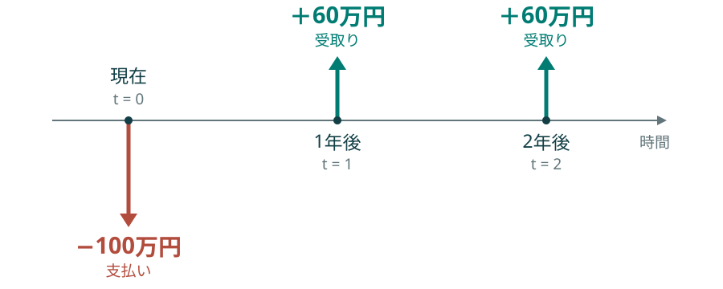
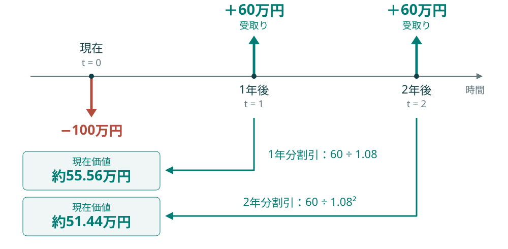
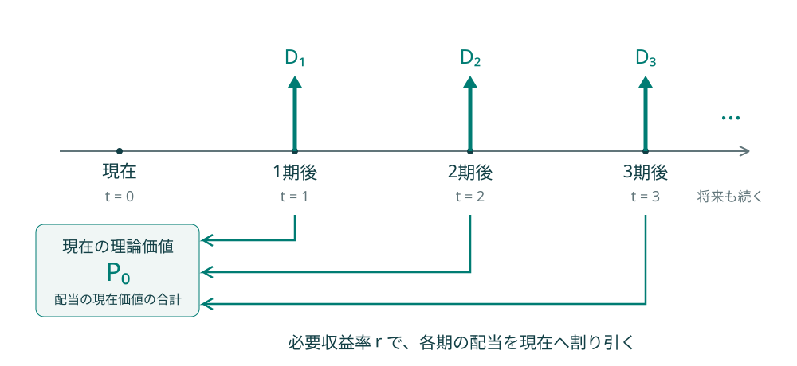
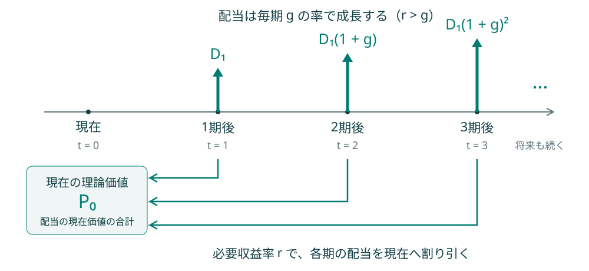

periods <- 0:2
cash_flows <- c(-100, 60, 60)
discount_rate <- 0.08
periods[1] 0 1 2cash_flows[1] -100 60 60同じ100万円でも、今日受け取る100万円と1年後に受け取る100万円は、通常同じ価値ではない。今日受け取った資金はすぐに利用または運用できる一方、将来の資金を受け取るまでには時間がかかり、不確実性も存在する。この考え方をお金の時間価値という。
投資や事業に伴う資金の受取りと支払いを、キャッシュフロー（cash flow: CF）という。投資を行う側から見て、受取りを正、支払いを負の金額で表す。
例えば、現在100万円を支払い、1年後と2年後にそれぞれ60万円を受け取る投資を考える。この投資では、現在に−100万円、1年後に60万円、2年後に60万円のキャッシュフローが発生する。受取額の合計は120万円であり、支払額を20万円上回る。ただし、この差額は、支払いから受取りまでの時間を考慮していない。

この投資の価値を評価するには、現在の支払いと将来の受取りを、同じ基準で比較する必要がある。お金には時間価値があるため、異なる時点の金額をそのまま足し合わせても、投資が生み出す価値を適切に評価することはできない。そこで、すべてのキャッシュフローを同じ時点の価値へ換算してから比較・合計する。ここでは、現在を\(t=0\)とし、将来の金額を現在の価値へ換算する方法を学ぶ。
現在のお金を将来の時点へ換算したものが将来価値、将来のお金を現在の時点へ換算したものが現在価値である。まず、1期間の換算方法を確認する。
現在の金額を\(PV\)、1期間当たりの利率を\(r\)とすると、1期間後の将来価値\(FV_1\)は
\[ FV_1=PV(1+r) \]
である。したがって、1期間後の金額を現在へ戻すと
\[ PV=\frac{FV_1}{1+r} \tag{1}\]
となる。\(1/(1+r)\)を割引因子という。
1年後に受け取る110万円を、年10%で現在価値へ換算する。
\[ PV=\frac{110}{1+0.10}=100\text{万円} \]
つまり、年10%という基準の下では、「現在の100万円」と「1年後の110万円」は同じ価値を持つ。
2年後、3年後のように受取時点が異なる金額も、それぞれの期間に応じて割り引けば、現在の価値にそろえられる。
\(t\)期間後に受け取るキャッシュフローを\(CF_t\)とすると、その現在価値は
\[ PV(CF_t)=\frac{CF_t}{(1+r)^t} \tag{2}\]
である。割引率が正のとき、期間が長いほど\((1+r)^t\)が大きくなるため、同じ受取額でも現在価値は小さくなる。
図 1 の「現在100万円を支払い、1年後と2年後に60万円ずつ受け取る投資」で考えてみよう。割引率を年8%とすると、1年後の60万円は1年分、2年後の60万円は2年分を割り引き、どちらも現在（\(t=0\)）の価値に換算する。

1年後の受取りは、60万円を\(1.08\)で1回割る。2年後の受取りは、\(1.08\)で2回割るため、分母が\(1.08^2\)となる。
\[ \begin{aligned} PV(CF_1)&=\frac{60}{1.08}\approx55.56\text{万円} \\ PV(CF_2)&=\frac{60}{1.08^2}\approx51.44\text{万円} \end{aligned} \]
同じ60万円でも、受け取るまでの期間が長いほど、現在価値は小さくなる。 また、二つの受取りは現在の価値にそろえたので、合計できる。
\[ PV(CF_1)+PV(CF_2)=\frac{60}{1.08}+\frac{60}{1.08^2}\approx107.00\text{万円} \]
受取額をそのまま足すと120万円だが、年8%で評価した現在価値の合計は約107万円となる。一方、現在支払う100万円は、すでに現在の金額なので割り引かない。これで、将来の受取りと現在の支払いを同じ時点の価値で比較できる。
割引率は、資金を別の用途へ使った場合に得られる収益機会、資金調達コスト、キャッシュフローの不確実性などを反映する評価基準である。割引率の選択によって現在価値とNPVは変化するため、計算結果には使用した割引率を必ず明記する。
NPVは、将来の受取りを現在価値に換算した合計から、初期投資額を差し引いたものである。投資によって現在の価値がどれだけ増えるかを金額で表す。
ある投資案について、時点0の初期投資額を\(I_0\)、第\(t\)期のキャッシュフローを\(CF_t\)、割引率を\(r\)、最終期を\(T\)とする。正味現在価値（Net Present Value: NPV）は
\[ NPV(r)=-I_0+\sum_{t=1}^{T}\frac{CF_t}{(1+r)^t} \tag{3}\]
と定義される。
時点0のキャッシュフローを\(CF_0=-I_0\)と書けば、次のようにまとめられる。
\[ NPV(r)=\sum_{t=0}^{T}\frac{CF_t}{(1+r)^t} \tag{4}\]
時点0では\((1+r)^0=1\)であるため、初期投資額は割り引かれない。
NPVの符号を見ると、その投資が、基準とする収益率を満たすかどうかを判断できる。
独立した投資案では、基本的な判断基準は次のとおりである。
| NPV | 判断 | 意味 |
|---|---|---|
| \(NPV>0\) | 採用 | 必要な収益率を上回る価値を生み出す |
| \(NPV=0\) | 無差別 | 必要な収益率とちょうど一致する |
| \(NPV<0\) | 棄却 | 必要な収益率を満たさない |
複数の相互排他的な投資案から一つだけ選ぶ場合は、同じ前提と割引率の下で、原則としてNPVが最も大きい案を選ぶ。
冒頭と同じく、現在100万円を支払い、1年後と2年後にそれぞれ60万円を受け取る投資を考える。金額の単位は万円とする。
| 時点\(t\) | 0 | 1 | 2 |
|---|---|---|---|
| キャッシュフロー\(CF_t\) | -100 | 60 | 60 |
割引率を8%とすると、NPVは
\[ \begin{aligned} NPV(0.08) &=-100+\frac{60}{1.08} +\frac{60}{1.08^2} \\ &\approx7.00\text{万円} \end{aligned} \]
となる。NPVが正であるため、割引率8%を評価基準とするなら、この投資案は採用可能である。
内部収益率（Internal Rate of Return: IRR）は、NPVを0にする割引率である。IRRを\(r^*\)と書くと
\[ 0=-I_0+\sum_{t=1}^{T}\frac{CF_t}{(1+r^*)^t} \tag{5}\]
を満たす\(r^*\)がIRRである。
前の数値例では、
\[ 0=-100+\frac{60}{1+r^*} +\frac{60}{(1+r^*)^2} \]
を満たす\(r^*\)を求める。解は約13.07%である。
IRRを必要収益率と比べることで、投資案を評価できる。ただし、この判断基準を使うには、キャッシュフローの形や投資案どうしの関係を確認する必要がある。
キャッシュフローが「最初に支出が一度あり、その後は受取りが続く」という標準型で、投資案が独立している場合、次の規則を利用できる。
| 比較 | 判断 |
|---|---|
| \(IRR>r\) | 採用 |
| \(IRR=r\) | 無差別 |
| \(IRR<r\) | 棄却 |
ここで\(r\)は必要収益率または基準となる割引率である。例のIRRは13.07%なので、必要収益率が8%なら採用、20%なら棄却となる。
お金の時間価値のもう一つの応用例は、配当割引モデル（Dividend Discount Model: DDM）による株式の評価である。株式を保有する株主が受け取る配当を将来のキャッシュフローと考え、その現在価値の合計として、1株当たりの理論価値を求める。
\(t\)期後に受け取ると予想される1株当たりの配当を\(D_t\)、株主が求める収益率（必要収益率）を\(r\)とすると、現在の1株当たりの理論価値\(P_0\)は
\[ P_0=\sum_{t=1}^{\infty}\frac{D_t}{(1+r)^t} \tag{6}\]
と表される。投資案の評価では事業のキャッシュフローを割り引いたが、DDMでは株主が受け取る配当を割り引く。

配当が毎年一定の率\(g\)で成長すると仮定すると、\(D_t=D_1(1+g)^{t-1}\)であり、上の式は
\[ P_0=\frac{D_1}{r-g},\qquad r>g \tag{7}\]
とまとめられる。これを定率成長モデル（ゴードン成長モデル）という。\(D_1\)は、すでに支払われた配当ではなく、1年後に受け取ると予想される配当である。この式は、必要収益率と配当成長率が一定で、必要収益率が配当成長率を上回る場合に使える。

例えば、1年後の予想配当が1株当たり50円、必要収益率が年8%、配当成長率が年3%の場合、理論価値は
\[ P_0=\frac{50}{0.08-0.03}=1{,}000\text{円} \]
となる。この前提の下では、市場株価が1,000円より低ければ割安、高ければ割高と評価される。ただし、理論価値は予想配当、成長率、必要収益率の設定によって変わる。
配当が成長せず、毎年同じ額\(D\)が続く場合は、\(g=0\)として
\[ P_0=\frac{D}{r},\qquad r>0 \tag{8}\]
となる。これをゼロ成長モデルという。いずれの場合も、将来受け取るお金を現在の価値にそろえて合計するという考え方は同じである。
empirical_finance.Rprojを開く。scriptフォルダにlesson05.Rという名前で保存する。すでに作成している場合は、そのファイルを開く。このChapterではRの標準機能のみを使うため、パッケージのインストールやlibrary()の実行は不要である。キャッシュフローはコード内で作成するので、データファイルも準備する必要はない。
前回のオブジェクトはProjectを開くと自動復元されるが、ここで使うベクトルと関数は、以下のコードで作成する。
冒頭の例と同じく、現在100万円を支払い、1年後と2年後にそれぞれ60万円を受け取る投資を扱う。第3回で学んだベクトルを使い、時点とキャッシュフローを表す。
periods <- 0:2
cash_flows <- c(-100, 60, 60)
discount_rate <- 0.08
periods[1] 0 1 2cash_flows[1] -100 60 60各時点の現在価値は、ベクトル化された計算で一度に求められる。
discount_factors <- 1 / (1 + discount_rate)^periods
present_values <- cash_flows * discount_factors
pv_table <- data.frame(
period = periods,
cash_flow = cash_flows,
discount_factor = discount_factors,
present_value = present_values
)
pv_table period cash_flow discount_factor present_value
1 0 -100 1.0000000 -100.00000
2 1 60 0.9259259 55.55556
3 2 60 0.8573388 51.44033時点0の割引因子は1であり、初期投資-100はそのまま現在価値となる。NPVはpresent_value列の合計である。
sum(pv_table$present_value)[1] 6.995885第4回で学んだfunction()を使い、キャッシュフロー、割引率、時点を受け取ってNPVを返す関数を作る。
calculate_npv <- function(cash_flows, discount_rate,
periods = seq_along(cash_flows) - 1) {
present_values <- cash_flows / (1 + discount_rate)^periods
sum(present_values)
}seq_along(cash_flows)は要素数に応じて1, 2, …という連番を作るため、1を引くと現在から始まる時点0, 1, …になる。periodsを省略した場合は、この時点を使う。
関数内では、各キャッシュフローを対応する時点で割り引き、sum()で合計する。最後の計算結果が返り値となるため、return()は省略している。
割引率8%で計算する。
npv_8 <- calculate_npv(cash_flows, discount_rate = 0.08)
npv_8[1] 6.995885結果は約7.00万円であり、Chapter 1の手計算と一致する。キャッシュフローが現在、2年後、4年後に発生する場合などは、periods = c(0, 2, 4)のように時点を明示する。
割引率を変更して再計算する。
c(
NPV_5_percent = calculate_npv(cash_flows, 0.05),
NPV_8_percent = calculate_npv(cash_flows, 0.08),
NPV_15_percent = calculate_npv(cash_flows, 0.15),
NPV_20_percent = calculate_npv(cash_flows, 0.20)
) NPV_5_percent NPV_8_percent NPV_15_percent NPV_20_percent
11.564626 6.995885 -2.457467 -8.333333 割引率が高くなるにつれてNPVが低下し、8%と15%の間で正から負へ変わることが分かる。
uniroot()は、方程式\(f(x)=0\)の解を、指定した区間内で数値的に求める関数である。fに対象の関数、intervalに探索区間の下限と上限を指定する。対象の関数が区間内で連続であり、両端の関数値の符号が異なる区間を指定する。
例えば、\(x^2-2=0\)の正の解を、0から2の範囲で求める。
f <- function(x) {
x^2 - 2
}
result <- uniroot(f = f, interval = c(0, 2))
result$root[1] 1.414213結果はリストで返され、$rootで解を取り出せる。この例では、\(\sqrt{2}\)に近い約1.4142が得られる。
IRRも同じ方法で求められる。割引率を受け取ってNPVを返す関数をuniroot()に渡し、NPVが0になる割引率を探す。
npv_equation <- function(rate) {
calculate_npv(cash_flows, rate, periods)
}
irr_result <- uniroot(
f = npv_equation,
interval = c(-0.99, 1),
tol = 1e-10
)
irr_result$root[1] 0.1306624fには解を求める対象の関数、intervalには探索区間を指定する。この例では、割引率−99%から100%の範囲で探す。tolは解の精度を調整する許容誤差であり、1e-10は\(10^{-10}\)を表す。探索区間は、その両端でNPVの符号が異なるように設定する。
結果はリストで返され、$rootで求めた解を取り出せる。この例では約0.1307、百分率で約13.07%となる。NPV関数に代入して、NPVがほぼ0になることを確認する。
irr <- irr_result$root
calculate_npv(cash_flows, irr, periods)[1] 0.00000000000002842171数値的に求めた近似解であるため、NPVは厳密な0ではなく、0に非常に近い値になることがある。
IRRを求める一連の処理も関数にまとめれば、キャッシュフローを変えて繰り返し使える。ここでは、キャッシュフローを受け取ってIRRを返す関数を作る。
calculate_irr <- function(cash_flows,
periods = seq_along(cash_flows) - 1,
interval = c(-0.99, 1)) {
npv_function <- function(rate) {
calculate_npv(cash_flows, rate, periods)
}
result <- uniroot(
f = npv_function,
interval = interval,
tol = 1e-10
)
result$root
}periodsの既定値はNPV関数と同じである。関数内のnpv_function()は、受け取ったキャッシュフローと時点を使い、割引率rateに応じたNPVを返す。これをuniroot()に渡し、result$rootを返り値とする。
calculate_irr(cash_flows)[1] 0.1306624結果は約0.1307となる。探索範囲を変える場合はintervalを明示する。ただし、この関数が返すのは一つの解であり、IRRが複数存在する場合にすべてを求めるものではない。
File → New File → R Scriptから課題用のRスクリプトを新規作成し、script/homework05.Rとして保存する。授業用のlesson05.Rとは分けて以下の課題に取り組み、冒頭に学籍番号と氏名をコメントで記載する。
提出するファイル：homework05.R
| 項目 | 指示 |
|---|---|
| 提出先 | LETUSの第５回の「授業後課題」提出欄 |
| 提出物 | homework05.R |
| 締切 | 10月15日（木）23:59まで |
script/homeworkXX.R（XXは2桁の回番号）として保存する。必要なデータの作成・読み込みや関数の定義もこのファイルに記述し、コードを実行して結果を確認する。作業領域の.RDataや画面のスクリーンショットは、指定された提出ファイルの代わりにはならない。配当割引モデル（DDM）の定率成長モデルに基づき、1株当たりの理論価値を返す関数calculate_ddm()を作成しなさい。
\[ P_0=\frac{D_1}{r-g},\qquad r>g \]
次の三つの引数を受け取り、理論価値を返すように関数を定義しなさい。必要収益率が配当成長率を上回る場合を対象とする。
| 引数 | 内容 |
|---|---|
dividend_next |
1年後に受け取ると予想される1株当たりの配当\(D_1\)（円） |
required_return |
必要収益率\(r\)（年率） |
growth_rate |
配当成長率\(g\)（年率） |
年率は、9%なら0.09のように小数で指定する。
作成した関数を使い、1年後の予想配当が60円、必要収益率が年9%、配当成長率が年3%の場合の理論価値を求めなさい。
予想配当と必要収益率はそのままで、配当成長率を年0%に変更して理論価値を求めなさい。2の結果と比較し、配当成長率の違いが理論価値にどう影響するかを、Rスクリプトのコメントで説明しなさい。
1年後の予想配当を、5個の値からなるベクトルc(20, 40, 60, 80, 100)（円）として指定しなさい。必要収益率は年9%、配当成長率は年3%に固定し、作成した関数で各予想配当に対応する理論価値をまとめて求めなさい。結果を比較し、予想配当の違いが理論価値にどう影響するかを、Rスクリプトのコメントで説明しなさい。
必要収益率を、5個の値からなるベクトルc(0.05, 0.07, 0.09, 0.11, 0.13)として指定しなさい。1年後の予想配当は60円、配当成長率は年3%に固定し、作成した関数で各必要収益率に対応する理論価値をまとめて求めなさい。結果を比較し、必要収益率の違いが理論価値にどう影響するかを、Rスクリプトのコメントで説明しなさい。
homework05.R内のコードを最初から順に実行し、結果を確認した。Rスクリプトでは、#の後に説明を書くと、コメントになる。#から行末までの内容は、コードとして実行されない。複数行に分けて説明する場合は、各行の先頭に#を付ける。
# 問4の結果についての説明
# ここに、結果の比較と気づいたことを書く。
# 長い説明は、複数行に分けて書いてよい。